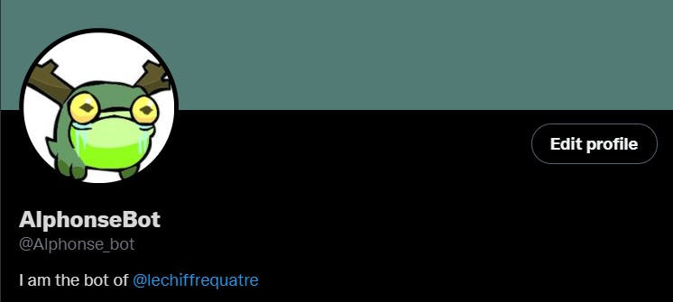
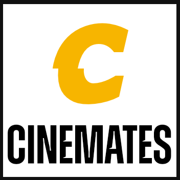
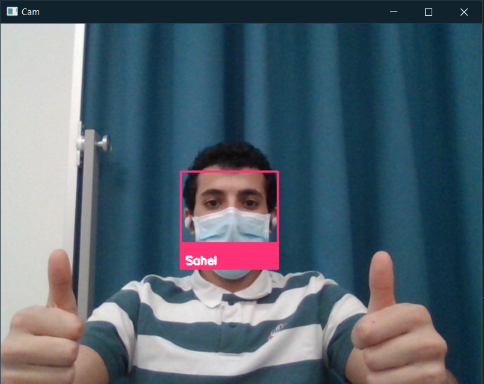

The future of this world is artificial intelligence. This is why I turned to a computer course.
As a Big Data and artificial intelligence enthusiast, I have the ambition to work in this vast field.
Intro
Hello and welcome to my portfolio.
My name is Sahel HAOUCHET. I'm a French student of the Computer Science and 3D development of University Institutes of Technology of Le Puy-en-Velay, France.
Currently, I am doing an international mobility in Matane, QC, Canada to complete my degree at Cégep de Matane in the Computer Technology section.
As a data science and artificial intelligence enthousiast, I would like to work in this vast field and if it's possible link my job with my second passion, the nature.
Enjoy your journey in my website and feel free to contact me.
Alphonse Bot

Alphonse is a Twitter Bot made in Python 3.
He post everyday a random sentence starting with "Life is" and ending with a random word in the english dictionnary.
I also made him to be able to analyse general ambiance on a specific hashtag based on the last 250 tweets. To analyse a hastag,
you can mention him with the hashtag you want to analyse.
Exemple : @Alphonse_bot Can you analyse this hastag for me #chocolat .
In the futur, I will make him able to analyse other things such as a pictures or a profiles.
SkyAirLine Corporation is a real physics-based airplane game where you can roam freely, extinguish forest fires in Fire Fighting Airplane mode, deliver packages or even do stunts with an aerobatic plane.
This game was made in Unity3D with a team of 7 developpers and 3D modelers. We used the Agile method and I was the Scrum Master of this project.
Speech Recognition
This project is a speech recognition program which is able to do many thing with a simple vocal line.
I use this program as a vocal macro to open multiple website at the same time for exemple. You can use this program by opening the executable file and talk.
This project is under maintenance, I want to add multiple actions and add a small interface.
CineMates

CineMates is a website that use the web scraping to give a mark to every movies. The website browse the internet and recovers on multiple other website the marks given by the users. The algorithm make the average depending on the number of votes and display the perfect average mark.
CineMates includes also an other useful tool for the cinephile like an randomized film proposition based on your preferences.
CineMates is a Python Web site made with Django. I used the Python libarie BeautifulSoup4 and Ajax for the requests between frondend and backend.
SportSpots
The SportSpots mobile application aims to make it easier for outdoor sports enthusiasts to find “spots” suitable for their favorite sports via a google map. The application is community-based because users who have created an account can add, verify, rate and comment on spots.
This application is made with React Native, FireBase and the Google Map API.
Mobile Tamagotchi
This project is a reproduction of the famous Tamagotchi game on mobile. The aim of application is to educate young people about drugs and cigarettes.
This mobile application was made in Java with Android Studio
Face Recognition

This project is a quite easy Python script with OpenCV and your webcam. The algorithm is able to detect a face and identificate it if the algorithm know the person.
I created this project during the Covid-19 crises that's why I wear a mask on the picture.
SkyAirLine Corporation
maintenance explanation :
During this maintenance the main things that was my priority were bugs. And they were many. In first I had to fix every bugs in the Pause menu.
The player couldn't go back to the main menu and change the volume of the sounds. I also had to add trees model to the game so the map generate trees as decor.
In the mode FireFighting, I completely changed the fire. It was too small and not enough random. While fixing this issues a encounter an other problem with
the score interface in this gamemode only.
And the last issue corrected was in the main menu, I removed some useless settings and repaired the plane preview.
Technological watch :
This project and maintenance was made in Unity 2020.3.12. Unity is a 2D and 3D game engine where you can develop script in C#.
The main opponent of Unity in Unreal Engine which is also a 2D/3D game engine. Both of this game engine are powerfull enough to
create a game like SkyAirLine Corporation but we chose Unity for a few reasons. First, all the developpers in this project have
already worked with Unity and C#. The second reason is that to create this game we needed a lot of help because it was our first 3D
game. For that, Unity is better because there are a lot of tutorials and forums. And the last reason is that we didn't have the choice.
SkyAirLine Corporation is a University project and Unity is the only game engine learned and allowed in our University.
speech recognition
maintenance explanation :
During this maintenance, I wanted to resolve one of the biggest problem of this project. The user couldn't choose his own web shortcut.
I had to add a new function to the project to allow the user to create his own shortcut with a specific word that the algorithm will recognize
and a specific web address.
I also create a small Tkinter interface that allow the user to start the recognition, add a shortcut and quit the recognition.
Technological watch :
This project and maintenance was made in Python 3.9. With the Python Module speech_recognition. There is no easy python module that allow
the developper to recognize voice lines thats why I used this module. An other alternative was to use a bigger librairy like TensorFlow or Pytorch.
But I will be very complexe and too powerfull for this project.
For the interface, I used Tkinter. In Python, there are a lot of graphics library. But Tkinter is the most used one and the less complexe.
The principals alternatives are Qt Python, wxPython, PyQt, PySide, etc...
For now the interface is awful because I am not a very good designer but I will improve it soon.
This project is usable and online but not finished. I will add more and more features in the futur.
AlphonseBot
maintenance explanation :
During this maintenance, I added a new feature. Alphonse can now reply to tweets that mention him. When you mention him in a tweet you can
add a hashtag in your tweet. Alphonse will recovers your tweet, extract the hashtag and analyse it. After that, he will reply to your tweet with a sentence
which sums up the mood. For that, he use a really powerfull algorithm of sentiment analysis. He will get the last 250 tweets on this specific hashtag and deduce the current atmosphere on this topic.
Technological watch :
To create this bot, I had multiple options. I could use JavaScript or Python. I chose Python because I wanted to use the Twitter API which is available in the two language but also use deep learning.
So I had to use a lot of librairy that are not available in JavaScript.
The free Twitter API is restricted in a lot of ways. I had ask for the superior version of the API, I had to wait few days to get it.
For the analyse, I used the module TextBlob.
TextBlob use an other module from Python called NLTK which means "Natural Language Toolkit" and is used to transform the text to something understandable by the computer.
Those modules can do many things but I only use it for the "sentiment polarity" function that return a decimal number between -1 and 1. The closer the value is to 1, the more cordial the text and the closer the value is to -1, the more hateful the text.
I use this value to create differents sentences for Alphonse. I write those sentences myself but in the futur I will add a sentences generator to my bot.
This project is usable and online but not finished. I will add more and more features in the futur.
About me
My skills
My hobbies
Swimming
I practiced swimming from my 1 year old to my 18 years old in a club.
nature walk
I really enjoy exploring and discovering little-known places